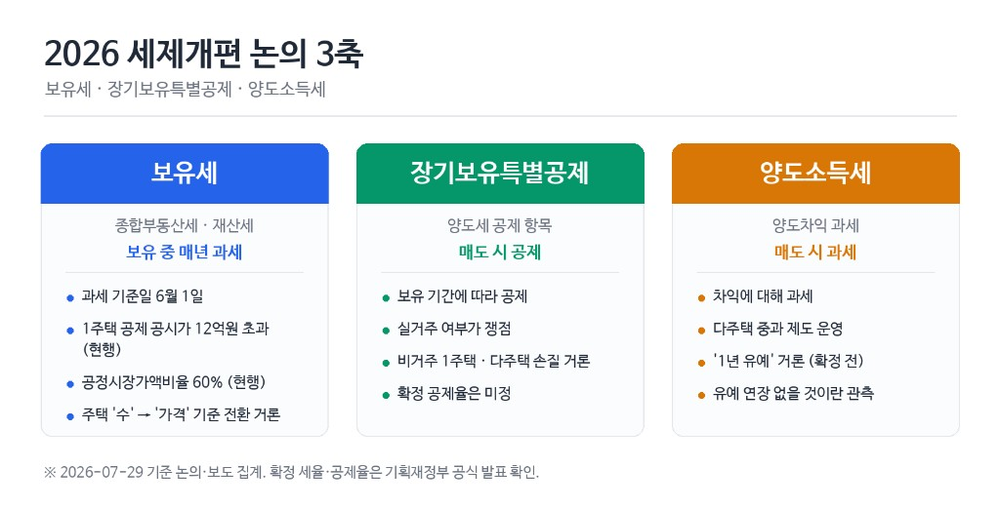
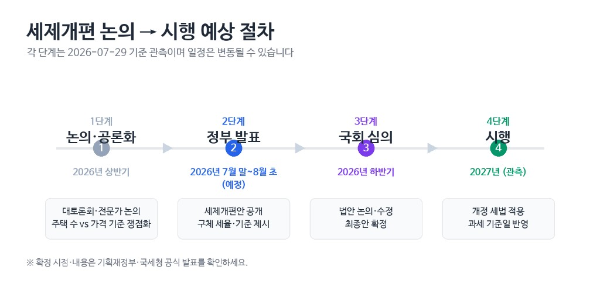

7월 부동산 세제개편, 지금까지 나온 방향 총정리 — 보유세·장특공제·양도세 (2026.7.29)
세제 3축 총정리 — 비교표·일정·영향 매트릭스 (발표 전 논의·관측 단계)
1. 도입 — 발표 임박, 아직 확정 전
2026년 7월 29일 기준, 부동산 세제개편은 발표 예정·확정 전 단계입니다. 7월 말~8월 초 발표가 거론되며 보유세(종부세), 장기보유특별공제, 양도세 이야기가 한꺼번에 나오고 있습니다. 다만 지금 나오는 내용은 확정된 세율·기준선·시행일이 아니라, 지금까지 거론되는 방향을 정리한 참고 자료로 읽어야 합니다.
이 글은 “세금 3축(보유·장특·양도)의 정책 방향”을 한곳에 모은 총정리입니다. 7월 23일 대토론회 정리는 논의가 처음 공개된 맥락을, 7월 세제개편 미리보기는 무주택·1주택·다주택 준비 실무를 다룹니다. 오늘 글은 그 사이에서 반복되는 논의 골자를 표와 일정으로 정리합니다. “지금 뭘 준비할까”는 발표 전 준비 체크리스트 한 편으로 충분합니다. 여기서는 어디에 닿는지를 먼저 봅니다.
뉴스 제목만 훑으면 “이미 확정됐다”는 착각이 생기기 쉽습니다. 실제로는 거론 → 발표 → 국회 → 시행 순서가 남아 있고, 적용 시점은 2027년부터라는 관측이 반복되지만 확정은 아닙니다. 생산관리 월급쟁이인 저도 “7월에 세금 바뀐다”는 말을 들으면 일단 달력부터 확인합니다. 바뀌는 건 세율표일 수도 있고, 공시가 집계에 따른 대상 확대일 수도 있고, 장특 요건일 수도 있습니다. 같은 “세제개편”이라도 3축 중 어디에 해당하는지부터 나누는 편이 덜 헷갈립니다. 최종 확정안이 나오면 본문을 업데이트하겠습니다. 지금은 “거론된다 / 논의 중이다 / 관측된다” 수준의 표현만 사용합니다.
먼저 읽어주세요
이 글은 2026년 7월 29일 기준 발표 전 논의·관측을 정리한 것입니다. 구체 세율, 공시가 기준, 적용 시점, 예외 요건은 기획재정부·국세청 공식 발표를 확인해야 합니다. 투자·법률·세무 자문이 아니며, 의사결정은 확정 자료와 전문가 상담을 기준으로 하세요.
- 보유세·장특공제·양도세 3축을 표로 비교합니다.
- 종부세 기준 변화·장특공제 쟁점·양도세 유예 논의 방향을 구분해 적습니다.
- 입법 일정과 상황별 영향 매트릭스, FAQ를 함께 둡니다.
- 확정 세율·기준금액은 넣지 않고, 논의·집계·관측 구분으로만 적습니다.
- 준비 실무는 발표 전 준비 체크리스트로 넘기고, 여기서는 정책 방향만 봅니다.
2. 세제 3축 한눈에 — 보유세·장특공제·양도세
부동산 세금 이야기가 한꺼번에 나올 때 헷갈리는 이유는, 세금 종류마다 과세 시점이 다르기 때문입니다. 보유세는 “가지고 있는 동안” 매년, 양도세는 “팔 때”, 장특공제는 “팔 때 세금 계산에서 깎아 주는 공제”입니다. 이번 7월 논의도 이 세 축이 동시에 거론되지만, 각각 바뀌는 방식과 시행 시점이 같지 않을 수 있습니다. 예를 들어 종부세 논의는 2026년 공시가 집계와 맞물려 이미 체감 이야기가 나오는 반면, 양도세 유예·강화는 2027년 적용 관측과 함께 읽히는 경우가 많습니다. 같은 날짜의 뉴스라도 3축 중 어디에 해당하는지부터 나누면, “오늘부터 바뀐다”는 오해를 줄일 수 있습니다.
보유세는 지방세인 재산세와 국세인 종합부동산세(종부세)를 함께 부르는 말입니다. 뉴스에서 “보유세 강화”라고만 나오면 두 세금이 섞여 전달되는 경우가 많습니다. 재산세는 매년 6월 1일 기준으로 부과되고, 종부세는 9월 1일 기준 합산 공시가격 등으로 별도 과세됩니다. 이번 개편 논의에서 특히 많이 언급되는 쪽은 종부세입니다. “집 한 채만 있는데 왜 보유세?”라는 질문은, 1주택이라도 공시가가 일정 수준을 넘으면 종부세 대상에 들어갈 수 있기 때문에 나옵니다. 세부 구조는 종부세 기본 가이드를 참고하세요.
종부세를 계산할 때는 공시가격 합계에서 기본공제를 빼고, 공정시장가액비율을 곱해 과세표준을 만듭니다. 그다음 세율·세액공제·세부담상한이 겹칩니다. 그래서 “공시가만 보면 된다”로 끝나지 않습니다. 개편 논의가 ‘주택 수’에서 ‘가격(가액)’ 쪽으로 옮겨간다는 말은, 다주택자만이 아니라 고가 1주택 보유자도 논의 범위에 더 자주 언급될 수 있다는 뜻으로 읽히는 경우가 많습니다. 초고가·비거주 주택 강화 논의와 같은 줄기입니다.

| 구분 | 과세 시점 | 주요 대상 | 이번 개편 논의 |
|---|---|---|---|
| 보유세(재산세·종부세) | 매년(보유 중) | 주택·토지 보유자 | 종부세 기준을 주택 수→가격(가액)으로, 초고가·비거주 강화 논의 |
| 장기보유특별공제(장특공제) | 양도(매도) 시 | 부동산 양도자 | 실거주 vs 비거주·1주택 vs 다주택 구분 논의 |
| 양도소득세(양도세) | 양도(매도) 시 | 부동산 양도자 | 유예 후 단계 강화, 다주택 중과 유예 연장 없을 관측 |
※ 확정 세율·기준금액은 기획재정부·국세청 공식 발표 확인 필수.
보유세 — “갖고 있을 때”
공시가·공제·공정시장가액비율 등이 겹칩니다. 이미 집을 가진 사람에게 직접 닿습니다.
장특·양도 — “팔 때”
취득·보유·거주 이력이 세금 계산에 들어갑니다. 매도 시점·요건이 핵심입니다.
3. 보유세(종부세) — 주택 ‘수’에서 ‘가격’ 기준으로?
이번 개편 논의에서 가장 많이 반복되는 줄기 중 하나는, 종부세 과세 축을 주택 ‘수’ 중심에서 ‘가격(가액)’ 중심으로 바꾸려는 방향입니다. “몇 채를 가졌는가”보다 “얼마나 비싼 집을 가졌는가”에 초점을 맞추려는 취지로 읽히는 경우가 많습니다. 초고가·비거주 주택의 보유세 부담을 키우는 방향도 함께 거론됩니다. 다만 어느 금액부터 초고가로 볼지, 세율·공제를 어떻게 재설계할지는 아직 확정 전입니다.
현행 구조에서 1세대 1주택자는 공시가격 합계가 일정 금액을 넘으면 종부세 대상이 됩니다. 공개·보도된 집계에 따르면, 1주택 공제 기준 공시가 12억원 초과 구간에 해당하는 가구가 전년 대비 크게 늘었다는 수치가 반복적으로 인용됩니다. 대상 가구는 약 31.8만 → 48.7만 가구, 증가율 약 +53.5%로 집계·보도된 바 있습니다. 이는 “세율이 올랐다”기보다, 공시가격이 오르면서 12억 선을 넘는 집이 늘었다는 집계에 가깝습니다. 개편안 확정 전에도 공시가 영향이 큰 해임을 기억할 필요가 있습니다.
같은 1주택이라도 단지·면적·연식에 따라 12억 선을 넘는 시점이 다릅니다. “우리 아파트 시세”와 “공시가 12억”은 같은 숫자가 아닐 수 있습니다. 종부세 고지를 받기 전에도, 공시가 알리미에서 내 단지 위치를 먼저 확인해 두면 발표 후 뉴스 숫자와 내 집을 연결하기 쉽습니다. 실제 납부세액은 공제·세율·세액공제·상한에 따라 사람마다 다릅니다. 12억 집계는 “대상 가구 수” 이야기이지, 개인별 세액을 미리 단정하는 숫자가 아닙니다.
종부세 과세표준을 만드는 공정시장가액비율도 논의 대상입니다. 현행은 대략 60% 수준으로 알려져 있고, 80% 수준으로 올리는 거론 시나리오가 보도·논의에서 반복됩니다. 비율만 올라가고 공제·세율·상한이 함께 손질되면 체감이 달라질 수 있습니다. “80%면 무조건 두 배”처럼 단정하지 않습니다. 개념 비교는 공정시장가액비율 시나리오 글, 종부세 전체 흐름은 종부세 개편 방향 총정리를 참고하세요.
| 항목 | 현행(개념) | 거론·논의 방향 |
|---|---|---|
| 과세 축 | 주택 수·공제 구조 중심 | 주택 가격(가액)·초고가·비거주 중심 논의 |
| 1주택 공제(집계 기준) | 공시가 12억원 초과 시 대상(1세대 1주택) | 기준·공제 재설계 논의 (확정 금액 아님) |
| 대상 가구(보도 집계) | 약 31.8만 가구(전년) | 약 48.7만 가구(+53.5%) 집계·보도 |
| 공정시장가액비율 | 현행 약 60% | 80% 시나리오 거론 (확정 아님) |
※ 세부 기준금액·세율은 기획재정부·국세청 공식 발표 확인 필수.
종부세 읽는 포인트
- 시세와 공시가격·과세표준은 다릅니다. 12억은 공시가 기준 집계입니다.
- 재산세(지방)와 종부세(국세)가 함께 움직일 수 있습니다. “보유세” 한 단어로만 보지 마세요.
- 개편안이 나오면 기준금액·세율·공제·상한이 한 세트로 맞춰질 가능성이 큽니다.
4. 장기보유특별공제 — 실거주 vs 비거주가 쟁점
두 번째 축은 양도세 계산에 들어가는 장기보유특별공제(장특공제)입니다. 현행 제도에서는 부동산을 오래 보유할수록 양도세 산출 시 일정 비율을 공제해 줍니다. 1세대 1주택자는 보유·거주 요건에 따라 상대적으로 높은 공제를 받을 수 있고, 다주택자나 일반 부동산도 장기 보유 시 일정 부분 공제를 받아 왔습니다. 이번 개편에서는 이 구조를 실거주 중심으로 재편하는 논의가 거론됩니다.
특히 비거주 1주택 장특공제 손질이 논의 대상으로 반복됩니다. “한 채만 가지고 있으면 실거주·비거주 구분 없이 유리하다”는 인식과, “실제로 살지 않는 고가 주택에도 장기 보유만으로 공제가 커진다”는 문제의식이 맞물린 흐름으로 읽히는 경우가 많습니다. 확정 공제율·거주 요건 변경안은 아직 없습니다. 다주택자·비거주 다주택에 대한 혜택 축소 논의도 함께 언급됩니다.
7월 23일 부동산 대토론회에서도 장특공제·실거주 구분 이야기가 나왔고, 이후 매체 보도에서도 같은 줄기가 이어졌습니다. 양도 계획이 있는 분은 “지금 확정된 공제율로 계산”이 아니라, 발표안이 나왔을 때 취득일·전입일·거주 기간을 바로 대조할 수 있게 자료를 모아 두는 편이 낫습니다. 구체 공제율은 기획재정부·국세청 공식 발표를 확인하세요.
장특공제를 “팔 때 깎아 주는 혜택”으로만 보면, 보유세와 양도세를 따로 생각하기 쉽습니다. 이번 논의는 두 축을 연결합니다. 비거주 고가 주택은 보유 중 종부세 논의와, 매도 시 장특·양도 논의가 같은 맥락으로 거론됩니다. 실거주 1주택자는 상대적으로 “실거주 요건 강화” 논의의 중심에 서 있지만, 공시가 12억 집계 맥락의 보유세 이야기와는 별개 레이어입니다. 두 표(종부세·장특)를 나란히 두고 읽는 것이 헷갈림을 줄입니다.
| 구분 | 현행(개념) | 거론·논의 방향 |
|---|---|---|
| 1주택·실거주 | 보유·거주 요건 충족 시 높은 공제 | 실거주 요건 강화 논의 (세부 미확정) |
| 1주택·비거주 | 장기 보유 시 일정 공제 | 비거주 1주택 손질 논의 |
| 다주택 | 장기 보유 시 일부 공제 | 비거주·다주택 혜택 축소 논의 |
| 확정 여부 | 현행 세법 적용 | 개편안·시행령 발표 전 |
※ 공제율·거주 기간 등 수치는 확정 전. 기획재정부·국세청 공식 발표 확인 필수.
5. 양도세 — 유예·단계적 강화 관측
세 번째 축은 양도소득세(양도세)입니다. 이번 7월 논의에서는 “당장 세율표가 바뀐다”기보다, 일정 기간 유예 뒤 단계적으로 강화하는 방향이 거론되는 흐름이 반복됩니다. 매체·논의에서 “1년 유예” 같은 표현이 나오기도 하지만, 유예 기간·대상·강화 방식·세율은 모두 확정 전입니다. 이 글에서는 유예·단계 강화를 거론·관측으로만 적습니다.
세제개편 미리보기에서도 다룬 바 있듯, 다주택자 양도세 중과 유예 연장은 없을 것으로 관측하는 보도가 이어졌습니다. 관측일 뿐이며, 최종 내용은 개편안 발표를 확인해야 합니다. 다주택자에게는 “유예가 끝난 뒤 어떤 구조로 강화될지”가 현금흐름·매도 시점 판단과 맞물릴 수 있습니다. 다만 개별 취득 시기·거주 요건·대체 주거 비용에 따라 결과가 크게 달라집니다.
양도세 논의를 읽을 때 자주 빠지는 함정이 있습니다. “유예 1년”이라는 말만 보고 “내년까지는 지금과 같다”고 단정하는 경우입니다. 유예는 거론 단계이고, 유예 대상·기간·강화 방식·경과 조치가 한 세트로 나와야 의미가 있습니다. 또 “발표 전에 팔면 현행 세율”도 개인별 취득·보유·거주·조정대상지역 여부에 따라 달라집니다. 발표 전 매도를 서두르거나 미루는 결정은, 확정되지 않은 세율 가정만으로 내리기 어렵습니다. 적용 시점 2027년 관측과 유예 1년 거론을 동시에 읽을 때는, “언제 팔았을 때 어떤 법이 적용되는지”를 국세청·세무사 안내로 확인하는 편이 안전합니다.
-
유예 후 단계 강화(거론)
“1년 유예” 표현이 보도되나, 기간·대상·세율은 확정 전입니다. 기획재정부·국세청 공식 발표 확인 필수. -
다주택 중과 유예(관측)
유예 연장이 없을 것으로 관측하는 보도가 있으나, 확정된 사실이 아닙니다. -
발표 전 매도·매수
확정되지 않은 세율을 가정해 급히 거래하는 것은 위험할 수 있습니다. 양도 시점·현행 세법은 국세청 안내가 정본입니다. -
보유세와의 관계
보유 부담(종부세)과 매도 부담(양도세)은 별도 레이어입니다. 한쪽만 보고 결론 내지 마세요.
양도세는 “몇 % 중과”처럼 숫자 하나로 끝나지 않습니다. 1주택·다주택, 보유 기간, 거주 여부, 조정대상지역 여부 등 요건이 겹칩니다. 개편안이 나오기 전에는 현행 세법 기준으로 상담·신고하는 편이 안전합니다. 불확실한 중과율·유예 기간은 지어내지 않고, 공식 발표를 기다리는 쪽이 맞습니다. 7월 23일 대토론회 이후 양도세·다주택 이야기가 반복 보도된 맥락은, 보유세·장특 논의와 같은 ‘실거주 vs 투자성 보유’ 구분 흐름 안에서 이해하는 편이 낫습니다.
6. 적용 시점·입법 일정 — 2027년부터?
네 번째로 반복되는 줄기는 적용 시점입니다. 2027년부터 적용한다는 관측이 보도·논의에서 여러 번 나왔습니다. 다만 발표 문안·시행령·유예 규정·경과 조치에 따라 실제 체감 시점은 달라질 수 있습니다. “2027년”은 관측일 뿐, 확정된 시행일이 아닙니다.
세제 개편은 보통 아래 순서를 거칩니다. 먼저 정부가 개편안을 발표(거론·7월 말~8월 초 예정)하고, 국회에서 법률 개정·예산·시행령 논의가 이어진 뒤, 공포·시행일이 정해집니다. 유예·경과 규정이 붙으면 “법은 통과됐는데 내 케이스는 내년부터” 같은 간격도 생길 수 있습니다. 그래서 발표 직후 헤드라인만 보고 “내일부터 바뀐다”고 오해하지 않는 것이 중요합니다.
2026년 7월 23일 대토론회가 ① 거론·논의 단계의 공개 사건이었고, 7월 29일 기준으로는 ② 발표를 앞두고 세부 방향이 매체에 반복 보도되는 구간입니다. ③ 국회·시행령은 아직 미확정이며, ④ 시행은 2027년부터 관측입니다. 같은 “7월 개편” 뉴스라도, 지금 읽는 단계(논의 vs 발표 vs 시행)를 먼저 구분하면 불필요한 조급함을 줄일 수 있습니다. 일정 숫자는 모두 관측·예정 표기이며, 기획재정부·국세청 공식 발표가 정본입니다.

| 단계 | 내용 | 2026년 7~8월 맥락 |
|---|---|---|
| ① 거론·논의 | 대토론회·매체·전문가 의견 | 7월 23일 대토론회 이후 논의 지속 (진행 중) |
| ② 발표 | 정부 세제개편안 공개 | 7월 말~8월 초 발표 예정 (2026-07-29 기준) |
| ③ 국회·시행령 | 법 개정·세부 규정 | 발표 후 단계 · 미확정 |
| ④ 시행 | 실제 세금·신고에 반영 | 2027년부터 적용 관측 (확정 아님) |
※ 일정은 관측·예정 단계. 기획재정부·국세청 공식 발표 확인 필수.
7. 상황별 영향 요약 — 준비가 아니라 ‘어디에 닿나’
같은 개편 뉴스라도 무주택·1주택·다주택에 닿는 방식이 다릅니다. 이 섹션은 “지금 뭘 준비할까”가 아니라, 어떤 세금 항목에 영향이 올 수 있는지만 정리합니다. 체크리스트·도구 연결은 7월 세제개편 미리보기 한 편으로 넘깁니다.
무주택자는 보유세·장특·양도에 직접 해당되지 않지만, 발표 전후 매물·호가·거래 심리·대출 규제 기대가 간접 영향으로 올 수 있습니다. 1주택 실거주자는 종부세(공시가 12억 구간 집계)와 장특공제(실거주 요건 논의)에 동시에 닿을 수 있습니다. 1주택 비거주·다주택자는 장특·양도·보유세 논의의 중심에 더 가깝게 거론됩니다. 같은 “1주택”이라도 실거주·비거주에 따라 표의 칸이 달라집니다. “우리 집은 1주택이니까 무관하다”는 식으로 한 칸만 보고 넘어가면, 발표 후 놓치는 항목이 생길 수 있습니다.
| 상황 | 보유세(종부세) | 장특공제 | 양도세 |
|---|---|---|---|
| 무주택 | 직접 해당 없음 · 시장 심리 간접 | 직접 해당 없음 | 직접 해당 없음 |
| 1주택·실거주 | 공시가·12억 구간 집계 영향 가능 | 실거주 요건 논의 핵심 | 1주택 비과세 등 현행 유지 여부 발표 확인 |
| 1주택·비거주 | 비거주·초고가 논의 | 비거주 1주택 손질 논의 | 양도 시점·요건 발표 확인 |
| 다주택 | 초고가·비거주 논의 | 다주택 혜택 축소 논의 | 유예·중과 관측 · 발표 확인 |
※ 직접/간접은 논의·집계 단계 기준. 확정 영향은 공식 발표 후 판단.
8. 발표 전 공통 체크리스트
아래는 “지금 당장 사거나 팔라”는 권유가 아닙니다. 확정안이 나왔을 때 자기 케이스를 빠르게 대조하려는 정보 정리 목록입니다. 상황별 실행·도구는 발표 전 준비 체크리스트를 보세요. 공시가·전입·취득 서류는 발표 전후에 찾느라 시간이 걸릴 수 있어, 미리 한 폴더에 모아 두면 발표 직후 비교가 수월합니다.
-
① 내 분류 적기
무주택 / 1주택(실거주·비거주) / 다주택 · 세대 기준 정리 -
② 이력 메모
취득일·전입일·거주 기간 · 양도·장특 대조용 -
③ 공시가 확인
국토교통부 부동산공시가격 알리미(realtyprice.kr)에서 내 단지 공시가 조회 -
④ 12억 구간(집계 기준) 대조
1세대 1주택 · 공시가 12억 초과 집계 맥락만 참고 · 확정 과세는 발표 후 -
⑤ 무리한 거래 자제
확정 전 세율 가정 매매·매수 자제 · 발표 후 재계산·상담 · 기획재정부·국세청 보도자료와 대조
9. 자주 묻는 질문
Q1. 지금 세율·한도가 확정됐나요?
아닙니다. 2026년 7월 29일 기준 발표 전 논의·관측 단계입니다.
7월 말~8월 초 발표 예정이 거론되지만, 확정안·시행령·경과 규정은 아직입니다.
기획재정부·국세청 공식 발표를 확인하세요.
Q2. 1주택 실거주자도 종부세·장특 영향을 받나요?
받을 수 있습니다. 종부세는 공시가 12억 초과 집계 맥락에서 1주택도 대상에 포함될 수 있고,
장특공제는 실거주 요건 논의의 중심입니다.
다만 확정 세율·공제 변경은 발표 전이므로 단정하지 않습니다.
공시가 확인은 Q4의 부동산공시가격 알리미를, 장특·양도는 취득·전입 이력과 함께 보세요.
Q3. 무주택자는 세제 개편과 무관한가요?
보유세·장특·양도에 직접 해당되지는 않습니다.
다만 발표 전후 시장 심리·대출·분양 일정에는 간접 영향이 올 수 있습니다.
무주택 실수요 준비는 발표 전 준비 체크리스트·청약 도구 쪽이 더 실용적입니다.
Q4. 공시가격은 어디서 확인하나요?
국토교통부 부동산공시가격 알리미(realtyprice.kr)에서 주소·단지별 공시가격을 조회할 수 있습니다.
종부세·재산세와 연결되는 숫자이므로, 12억 구간 집계 이야기를 볼 때 같이 확인하세요.
공시가는 매년 갱신되며, 2026년 공시가 반영으로 1주택 대상 가구 집계가 늘었다는 보도와 연결해 읽을 수 있습니다.
고지·과세표준과 다를 수 있으니, 최종 납부는 관할 기관·홈택스 안내를 따르세요.
Q5. 확정안이 나오면 이 글은 어떻게 되나요?
발표 직후 본문을 확정 수치·시행일 기준으로 업데이트할 예정입니다.
dateModified도 갱신합니다. 그때까지는 논의·집계·관측 구분 표기를 유지합니다.
10. 마무리 — 방향은 읽고, 숫자는 공식 발표에서
정리하면 이렇습니다. 2026년 7월 29일 기준, 부동산 세제개편은 발표 예정·확정 전입니다. 보유세(종부세)는 주택 수→가격(가액) 기준 논의, 1주택 공시가 12억 초과 집계(31.8만→48.7만, +53.5%), 공정시장가액비율 60% 현행·80% 거론 시나리오가 반복됩니다. 장특공제는 실거주 vs 비거주·1주택 vs 다주택 논의가 쟁점입니다. 양도세는 1년 유예 거론, 다주택 중과 유예 연장 없을 관측이 이어집니다. 적용은 2027년부터 관측이나 확정 시행일은 발표를 봐야 합니다.
“반드시 오른다/내려간다”고 찍지 않습니다. 오늘 표가 정책 방향을 읽는 출발점이 되길 바랍니다. 준비 실무·체크리스트는 7월 세제개편 미리보기로, 종부세 세부는 종부세 개편 방향 글로 이어서 보세요. 대토론회 맥락은 대토론회 총정리, 공정시장가액비율 시나리오는 공정시장가액비율 시나리오가 이어집니다. 발표 전후에는 헤드라인 한 줄보다, 기획재정부·국세청 보도자료와 세법 개정안 전문을 대조하는 습관이 더 안전합니다. 숫자는 기획재정부·국세청이 정본입니다.
📎 출처·참고

본 글은 정보 제공 목적이며, 발표 전 논의·집계·관측 단계 내용을 정리한 것으로 확정된 정책이 아닙니다. 투자·법률·세무 자문이 아니며, 확정 내용은 기획재정부·국세청 공식 발표와 전문가 상담을 통해 확인하시기 바랍니다.